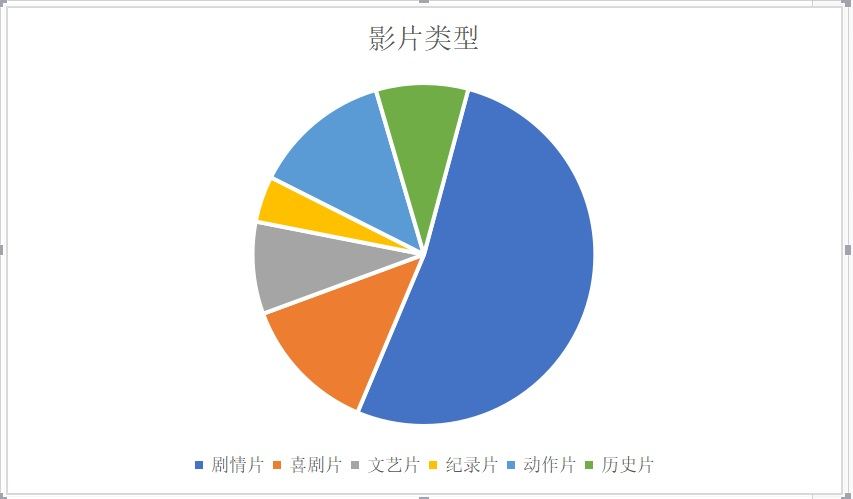

电影作为文化输出的窗口，也是中国文化走出去的重要途径，随着中国的经济实力越来强，电影的质量和影响也越来越受到了国际上的关注，接下来将从外媒视角出发，介绍国外媒体对中国电影的印象，并找出背后的渊源。
对于中国电影近二十年的报道可看出，中国电影的报道在经济学人中所占总体比例并不突出，报道量并不是很丰富。但是报道的总体趋势还是呈上升状态。报道内容也从单纯的对影片介绍逐渐转为对电影机制，电影市场，还有电影票房的分析。于此同时，对于影片的选择也不再仅仅局限于禁片或者乡土电影，而是开始逐渐转变为报道在中国国内流行的电影，其中包括《小时代》这种都市情感电影系列。

剧情类影片在报道中所提到的次数是最多的，其次是喜剧片和动作片。而剧情类影片除了夹杂一些爱情片外，大多数类型则为乡土气息浓重的“典型”中国电影和揭露社会矛盾的小众电影，其中不乏有当年热门电影，但是含有政治隐喻，或者被用来当作政治隐喻的工具。动作片报道所占比例也不似八九十年代那样高，其报道逐渐下降，但是2017年的《战狼2》让有关动作片的报道有所回春。总体来说，中国电影在形式与内容上要被外媒广泛接收，前路仍然漫漫，具体原因可看下文。
中国的电影越来越得到了国外的支持，从《金陵十三钗》中奥斯卡影帝克里斯蒂安·贝尔的加入到《长城》中马特·达蒙的加入，中外合作这一模式越来越受到国外影星的青睐。《狼图腾》的法籍导演让·雅克·阿诺和中国团队合作也使得这一电影的票房得到了不俗的效果。中国电影越来越吸引到了外国电影界的加入，这种中外合作的电影模式是中国电影对外影响逐渐加大的体现之一。而《战狼2》在经济学人中则被用于暗喻美国对于国家主权的干涉还有普世权力的关系。中国的电影在外媒眼中又有了另外一种作用。中国电影巨大的票房号召力开始让西方媒体对电影本质内容进行了一定的思考，这使西方电影界从相对较高的地位或态度转变为通过较为平等的眼光看待中国电影的本质与发展。
但是电影往往包含的不只是文学方面的内容，更多的会涉及到政治或者国家关系。比如在经济学人中也通过中国导演在俄拍摄电影收到冷遇来看待中俄关系的实质性特点，这就说明，中国电影在国外电影界或者媒体眼中并不仅仅是一个了解中国文化的渠道，同时也是一个观察中国政治动态，还有与其他国家关系的一个渠道。电影的复杂性还有随之产生的电影行业，电影制度的多层次性使得电影成为观察中国影响力的一个重要窗口。